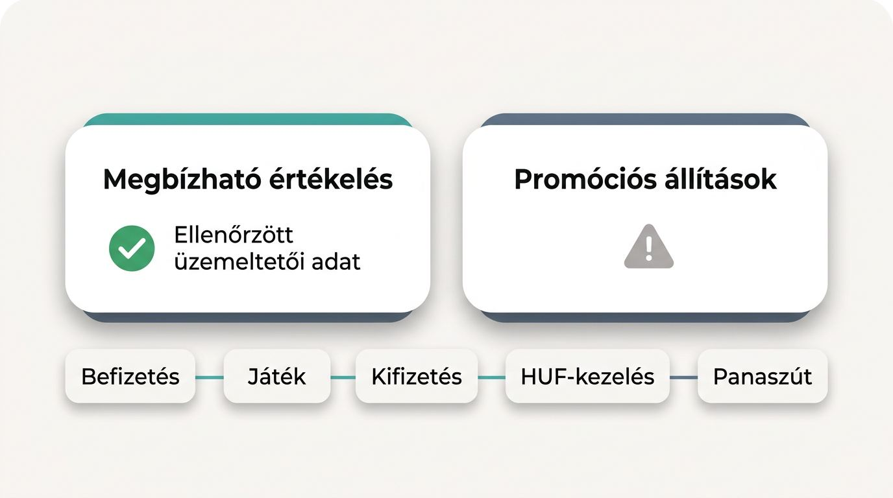
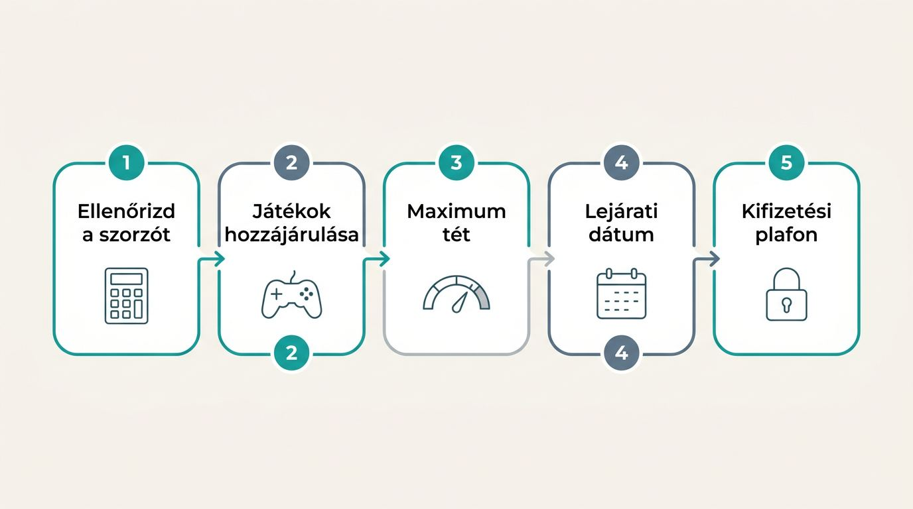
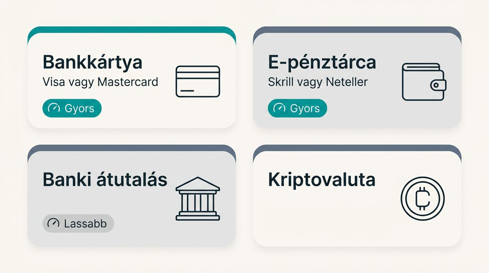
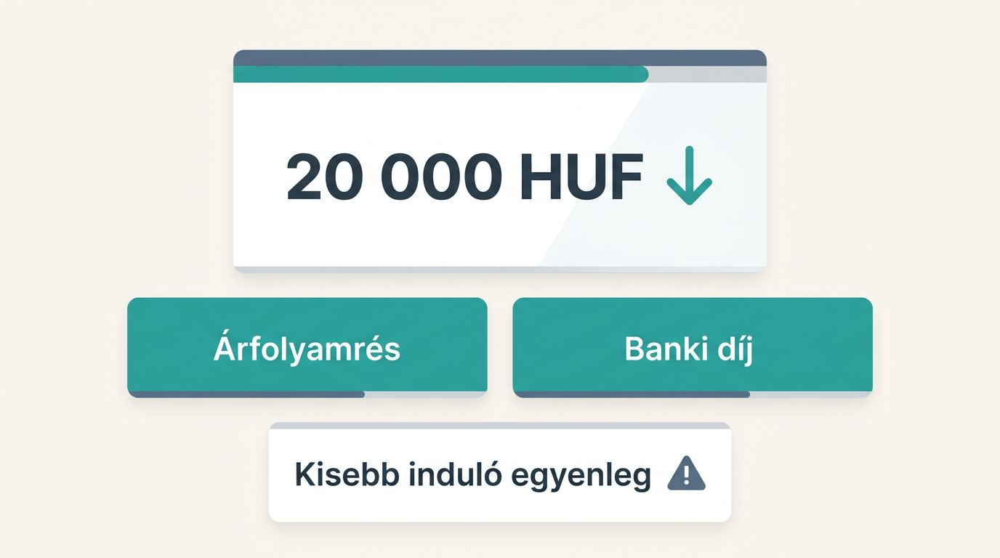
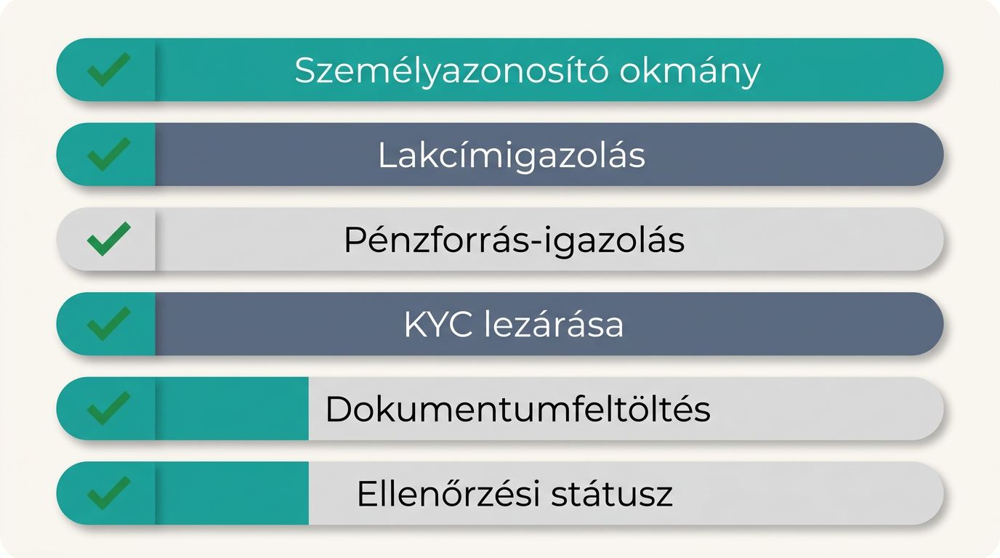

Külföldi online kaszinók magyar játékosoknak
Akkor válassz külföldi online kaszinót, ha Magyarországról a számodra megfelelő befizetési mód, játékok és kifizetési feltételek is igazolhatóan működnek. A látványos bónusz keveset ér, ha forintváltási költség, szűk kifizetési limit vagy bizonytalan ügyfélszolgálat csökkenti az értékét. Csak olyan számlára utalj, amelynek feltételei, magyar elérhetősége és pénzmozgása előre átlátható.

Így hasonlítjuk össze a külföldi online kaszinókat
Magyar játékosként akkor kapsz használható külföldi online kaszinó összehasonlítást, ha az egyszerre vizsgálja a befizetés, a játék és a kifizetés gyakorlati működését. Az értékelés elkülöníti az ellenőrzött üzemeltetői adatokat a promóciós állításoktól, és a hozzáférést, devizaköltséget, panaszutat, bónuszt és ügyfélszolgálatot együtt kezeli.
Az összehasonlítás fő szempontjai
A magyar regisztráció elfogadása és a pénzmozgás áll az első helyen, mert a játék- és bónuszkínálat csak működő számla mellett ad értéket.
| Értékelési kategória | Súly | Ellenőrizendő bizonyíték |
|---|---|---|
| Hozzáférés folytonossága | Magas | Elfogadott országok listája, ÁSZF, aktuális domain |
| Kifizetési feltételek | Magas | Feldolgozási idő, limitek, módszerazonossági szabály |
| Devizaköltségek | Magas | HUF-kezelés, árfolyam, banki és pénztári díjak |
| Vitakezelési út | Magas | Engedélyező hatóság, panaszrend, tulajdonosi adatok |
| Bónusz valódi értéke | Közepes | Megforgatás, lejárat, játékhozzájárulás, kifizetési plafon |
| Játék és mobilhasználat | Közepes | Katalógus, RTP-adatok, kereső, mobilos pénztár |
| Felelős játék eszközei | Közepes | Limitek, szüneteltetés, önkizárás, valóságellenőrzés |
Magyarországi használhatóság jelei
Az, hogy egy oldal magyar IP-címről betölt, önmagában nem igazolja, hogy a regisztrációt és a fizetéseket hivatalosan is elfogadja Magyarországról. Egy magyar játékosokat fogadó külföldi kaszinó akkor mutat hiteles lokalizációt, ha a pénzkezelés, a támogatás és a feltételek is egymáshoz illenek.
- Magyarország szerepel az elfogadott országok között, és az ÁSZF sem zárja ki a magyar regisztrációt.
- A forint alapú online kaszinó HUF-számlát vagy egyértelmű HUF-elszámolást mutat a pénztárban.
- A felsorolt fizetési módok magyar számláról is elérhetők, ezt a pénztárban kell megerősítened.
- A magyar nyelvű támogatás elérhető ügyfélszolgálati csatornát is biztosít.
- A promóciós feltételek külön jelzik, hogy magyar számlák is jogosultak rájuk.
Mire épülnek az értékelések és állítások
Egy pontszám vagy állítás akkor használható, ha a forrását te is vissza tudod keresni. A megbízható külföldi online kaszinó értékeléséhez az oldalak saját dokumentumai és a hatósági nyilvántartások adják az alapot, az anonimizált magyar közösségi visszajelzések csak másodlagos jelzések.
- Aktuális licencadat és közvetlen hivatkozás a szabályozó nyilvántartására.
- Közzétett pénztári limitek, díjak és kifizetési szabályok.
- Dátumozott bónuszfeltételek, játéklista és országkorlátozások.
- Dokumentált ügyfélszolgálati csatornák és válaszadási vállalások.
- Visszatérő, konkrét közösségi tapasztalatok a kifizetésről vagy az ügyintézésről.
Mit kínálnak a külföldi online kaszinók a magyar játékosoknak
Egy nemzetközi online kaszinó akkor lehet jó választás, ha a játékok, a pénzkezelés és a számlafeltételek jobban illenek a saját prioritásaidhoz. Az előnyei és hátrányai szolgáltatónként eltérnek, ezért a hozzáférés folytonosságát is külön ellenőrizd.
Szélesebb játékválaszték és több promóció
A nagyobb katalógus akkor hasznos, ha több releváns játéktípusból, tétméretből és bónuszból tudsz a saját keretedhez választani. A külföldi online kaszinó játékok között lehet több online nyerőgép, asztali játék és élő kaszinó, de a tényleges kínálatot mindig az adott oldalon nézd meg.
- Több szoftverszolgáltató adhat eltérő témájú és kockázatú játékokat.
- Az alacsony minimumtét vagy minimum befizetés akár kis keret mellett is használhatóbbá teheti a választékot.
- A szélesebb élő kaszinó kínálat több asztallimitet és műsorformátumot jelenthet.
- Az RTP segíthet játékot választani, ha az adott játék verziójánál közzéteszik.
- A promóciók gyakoriságát és jogosultságát a bónuszoldalon ellenőrizd.
Gyakorlati különbségek a hazai kaszinóoldalakhoz képest
A külföldi és magyar online kaszinó összehasonlításában azok a különbségek számítanak, amelyek a számlaelérhetőséget, pénzmozgást és napi használatot módosítják.
| Piaci jellemző | Hazai online kaszinó oldalak | Magyaroknak szóló külföldi online kaszinó |
|---|---|---|
| Számla elérhetősége | Magyar piacra szabott feltételek | Országelfogadást külön kell ellenőrizni |
| Fizetési rugalmasság | Jellemzően helyi megoldások | Többféle kártya, e-pénztárca vagy más útvonal lehet |
| HUF és deviza | Többnyire forintközpontú | HUF vagy devizaalapú egyenleg is előfordulhat |
| Promóciók | Helyi feltételekhez igazodnak | Gyakoribb, többféle ajánlat is lehet |
| Játékkatalógus | Piaci kínálattól függ | Nemzetközi szolgáltatói választékhoz kapcsolódhat |
| Ügyfélszolgálat | Magyar nyelv jellemző | A magyar lokalizáció minőségét ellenőrizni kell |
Engedélyek, magyarországi hozzáférés és bizalmi jelek
Befizetés előtt a leggyorsabb szűrő a licenc hitelesítése és annak megerősítése, hogy az üzemeltető aktuális feltételei szerint fogad magyar ügyfeleket. A külföldi online kaszinó engedélyét a szabályozó nyilvántartásában ellenőrizd, a láblécben szereplő jelvénytől függetlenül.
A Malta Gaming Authority és a Curaçao eGaming eltérő engedélyezési keretet adhatnak. A nyilvános ellenőrizhetőség, a pénzkezelési tájékoztatás és a licencalapú panaszút részletei eltérhetnek. Egy külföldi licenc önmagában nem bizonyít biztonságos fizetést, tisztességes játékot vagy megbízható kifizetést. Az SSL-titkosítás és a kétfaktoros hitelesítés további, ellenőrizhető bizalmi jel.
A magyar szerencsejáték-szabályozás és az 1991. évi XXXIV. törvény a hozzáférést, a pénzmozgást és a panaszlehetőségeket is érintheti. Az SZTFH blokkolt szerencsejáték-weboldalakat és tiltott fizetési számlákat tartalmazó nyilvántartásai miatt egy oldal elérése vagy egy tranzakció teljesülése változhat. A VPN külföldi online kaszinóhoz vagy egy kaszinó tüköroldal használata nem ad megbízható választ a hivatalos országelfogadásra.
Befizetés előtti prioritás: Először az SZTFH nyilvántartásait, az aktuális domaint, a magyar országelfogadást és a ténylegesen használható fizetési útvonalat ellenőrizd.
- Keresd meg az üzemeltető teljes nevét, címét és licencszámát.
- Nyisd meg a licencező hatóság hivatalos keresőjét, és egyeztesd az adatokat.
- Nézd meg, hogy Magyarország elfogadott országként szerepel-e az ÁSZF-ben.
- Ellenőrizd az SZTFH releváns blokkolási és tiltott fizetési számla nyilvántartásait.
- Válassz olyan szolgáltatót, amely átlátható tulajdonosi háttérrel és többéves működési múlttal rendelkezik.
Üdvözlő bónuszok, ingyenes pörgetések és valódi értékük

A hirdetett bónuszösszeg csak kiindulópont, a használható értéket a feltételek, a saját befizetésed és a választott játékok együtt adják. Egy külföldi online kaszinó bónuszát ezért a felhasználás szabályai alapján hasonlítsd össze.
A kaszinóbónuszok fő típusai
A kaszinóbónuszok eltérő célra valók, így a címsorban szereplő összeg alapján nem hasonlíthatod őket össze. A külföldi kaszinó üdvözlő bónusza csak akkor releváns magyar regisztrációhoz, ha az országjogosultság és a kifizetési feltételek is világosak.
- Befizetéshez kötött üdvözlő bónusz: Az első feltöltéshez kapcsolódó pluszegyenleg, amelynek felhasználását külön szabályok korlátozzák.
- Ingyenes pörgetések: Meghatározott nyerőgépre adott pörgetések, amelyek értéke a játékhoz és a kifizetési feltételekhez kötődik.
- Befizetés nélküli ajánlat: Kis kezdőegyenleg vagy pörgetés, amelynél gyakori a szigorú kifizetési plafon.
- Újratöltési bónusz: Későbbi befizetésekhez adott ajánlat, amelyet a gyakoriság és a feltételek alapján érdemes mérni.
- Visszatérítés: Meghatározott veszteség után adott jóváírás, ha a devizanem és a szabályok egyértelműek.
- Hűség- vagy VIP-jutalom: Csak közzétett jutalomdeviza, kifizetési limit és átlátható feltétel mellett hasonlítható össze.
Megforgatási követelmények és korlátozások
A megforgatási követelmény az a szorzó, amely megadja, hányszor kell megtenned a bónuszösszeget, egyes ajánlatoknál pedig a befizetést is, mielőtt teljesülhetnek a kifizetési feltételek. A bónusz fogadási követelmény ugyanazzal a szorzóval is eltérő nehézségű lehet, ha a játékok eltérő arányban számítanak bele.
- Ellenőrizd, hogy a szorzó csak a bónuszra vagy a befizetésre is vonatkozik-e.
- Nézd meg, mely játékok jogosultak a teljesítésre.
- Hasonlítsd össze a játékok hozzájárulási arányát, mert ez módosítja a teljesítés sebességét.
- Keresd meg a megengedett maximum tétet.
- Ellenőrizd a bónusz lejárati dátumát.
- Nézd meg a maximum kifizetési összeget.
Bónuszérték összehasonlítása forintban
A bónuszt a tényleges HUF-egyenértékű befizetéshez, az átváltási költséghez, a használható felső határhoz és a magyar számla jogosultságához mérd. Egy külföldi kaszinó HUF-kezelése akkor kedvező, ha a minimum befizetés és a bónuszmaximum is illik a tervezett keretedhez.
Bónuszérték ellenőrzése: A teljesíthető feltételek mellett használható teljes játékértéket hasonlítsd össze. A főcímbeli bónuszösszeg önmagában nem elég. Például egy kisebb, forintban olcsóbban feltölthető ajánlat többet érhet, ha nincs jelentős átváltási költsége.
Fizetési módok, HUF támogatás és kifizetési sebesség

Egy fizetési mód értékét a teljes költség, a bizonyított elérhetőség, a kifizetési kompatibilitás és a feldolgozás megbízhatósága együtt adja. A külföldi online kaszinó befizetési módok és a külföldi online kaszinó kifizetés feltételeit ugyanazon pénztári oldalon ellenőrizd.
Magyarországról elérhető befizetési módok
A befizetési módot minden kaszinónál külön ellenőrizned kell, mert az elérhetőség, a limit, a díj és a kifizetési kompatibilitás eltérhet. Magyarországon a bankkártya és az e-pénztárca gyakori választás, míg a kriptovaluták költségei és kockázatai eltérőek lehetnek.
| Fizetési mód típusa | Magyarországi használhatóság | Sebesség | Költség és kifizetés |
|---|---|---|---|
| Bankkártyás kaszinó befizetés, Visa vagy Mastercard | Gyakran elérhető, pénztárban ellenőrizendő | Többnyire gyors | Banki devizadíj és visszautalási szabály előfordulhat |
| E-pénztárcás kaszinó, Skrill vagy Neteller | Szolgáltatónként változó | Gyors lehet | Saját pénztárcadíj és devizaváltás csökkentheti az egyenleget |
| Banki átutalás | Elérhetőség és fogadó számla szerint változik | Lassabb lehet | Átutalási díj, bankszünnap és kifizetési limit számíthat |
| Kriptovalutás online kaszinó | Csak egyes oldalakon elérhető | Hálózattól függ | Hálózati díj, árfolyammozgás és kifizetési szabály ellenőrzendő |
A minimum befizetést, a feldolgozási időt és azt is nézd meg, hogy ugyanazzal a módszerrel kérheted-e vissza a pénzt.
HUF átváltási költségek és rejtett díjak

A befizetési mód kiválasztása kevés, ha nem látod előre a HUF-ból induló teljes költséget, mert devizaszámlán több ponton is csökkenhet a játszható egyenleg. A forint euróhoz vagy más devizákhoz mért árfolyammozgása a befizetés és a későbbi kifizetés értékét is módosítja.
Például 20 000 forint feltöltésénél az árfolyamrés és egy külön felszámított banki díj együtt kisebb induló egyenleget eredményezhet, mint amennyit a forintösszeg alapján várnál. A forint alapú online kaszinó ezt a kockázatot mérsékelheti, ha valóban HUF-egyenleget vezet.
- Ellenőrizd a kaszinó saját árfolyam-szabályát és a számla alapdevizáját.
- Nézd meg, mikor számít fel díjat a bank, a Skrill vagy a Neteller.
- Kriptónál a hálózati díjat a küldéskor, az árfolyamkockázatot pedig a váltáskor vedd figyelembe.
- Keresd meg a kifizetési díjat és az esetleges minimumösszeget.
Kifizetési feltételek és számlaadatok
Kiszámítható kifizetéshez együtt kell látnod a feldolgozási időt, a napi és havi limitet, az azonos módszerre vonatkozó szabályt, valamint a később letölthető tranzakciós nyomvonalat. A gyors kaszinó kifizetés ígéretét a közzétett feldolgozási idő, a KYC státusza és a választott módszer alapján mérd fel.
A letölthető tranzakciós lista és a számlakivonat választási szempont lehet Magyarországon, mert támogatja a saját pénzügyi tervezésedet és nyilvántartásodat. A függő kifizetés visszavonási szabálya is számít, különösen akkor, ha még nem véglegesítetted a pénzmozgást.
- Nézd meg a pénztári oldalak által közölt feldolgozási időt.
- Ellenőrizd a napi és havi kifizetési limitet.
- Keresd meg, hogy a befizetési és kifizetési módszernek egyeznie kell-e.
- Nézd meg, visszavonható-e a függő kifizetés.
- Ellenőrizd, letölthető-e a tranzakciós előzmény és a számlakivonat.
Játékok, élő kaszinó és mobilos élmény
Két egyformán elérhető külföldi internetes kaszinó között a kereshető játékfelhozatal és a magyar hálózatokon stabil mobilhasználat döntheti el, melyiket tudod kényelmesen használni. Az online kaszinó napi értékét a katalógus mélysége és a felület működése együtt adja.
Nyerőgépek, asztali játékok és élő kaszinó
A használható játékkatalógust a könnyen megtalálható kategóriák és a számodra releváns mélység határozza meg. A külföldi online kaszinó játékok között az online nyerőgépek, az asztali játékok és az élő kaszinó kínálata akkor segít választani, ha a felület gyorsan elvezet a keresett formátumhoz.
- Nézd meg a nyerőgépek témáját, tétlépcsőit és jackpotválasztékát.
- Ellenőrizd az asztali játékok, az élő osztós asztalok és a műsorjellegű játékok mélységét.
- Keresd a magyar témájú vagy helyileg releváns tartalmakat, ha ezek érdekelnek.
- Próbáld ki a keresőt és a kategóriaszűrőket, mert ezek mutatják meg, mennyire gyorsan találsz rá a számodra legjobb játékra.
Szoftverszolgáltatók és RTP-átláthatóság
A szoftverszolgáltatók nyilvános feltüntetése és a játékoldalon szereplő RTP olyan minőségi jel, amely segít felmérni a katalógus sokféleségét és az elérhető tisztességességi információkat. A kaszinó RTP-je játékosként elméleti, hosszú távú visszatérési arányt jelez, egyéni eredményt nem jósol.
Ugyanazon játék eltérő verziói eltérő RTP-vel működhetnek, ezért a konkrét játékoldalon közzétett értéket keresd. Egy ismert fejlesztő neve sem garantálja az adott oldal biztonságos pénzkezelését.
- Ellenőrizd, hogy a kaszinó feltünteti-e a szoftverszolgáltatókat.
- Keresd meg a konkrét játék RTP-értékét és annak verzióját.
- Nézd meg, elérhető-e engedett demó mód.
- Ellenőrizd, található-e független játéktesztelésre utaló információ.
Mobilos használhatóság Magyarországon
A mobilos minőséget a stabilan végrehajtható feladatok alapján mérd fel, különösen közepes készüléken vagy ingadozó kapcsolaton. Sok magyar játékos mobilon használ online külföldi kaszinót, ezért a látványos felületnél többet ér az adatforgalom-takarékos és világosan kezelhető pénztár.
- Tölts be több játékot, és figyeld meg, mennyire stabil a mobilböngésző.
- Válts kategóriák között kisebb kijelzőn, majd ellenőrizd az egyenleget.
- Nézd meg, elérhető-e alkalmazás, és ugyanazokat a számlafunkciókat kínálja-e.
- Próbáld ki a limitbeállítást és a kifizetés kezelését, mert ezek akár mobilon is egyértelműek kell legyenek.
- Figyeld meg, mennyi adatforgalmat használ a felület hosszabb használat alatt.
Regisztráció, KYC és ügyfélszolgálat

A számlaellenőrzés és a támogatás minősége közvetlenül meghatározhatja, mennyire simán rendezhetők a befizetések, kifizetések és számlakérdések. Külföldi online kaszinót akkor válassz, ha ezek feltételeit még a pénz elkötelezése előtt átlátod.
Mire számíts KYC-ellenőrzéskor
A KYC-ellenőrzés személyazonosság- és számlaellenőrzés, amelynek követelményeit a befizetés előtt világosan kell látnod. A külföldi internetes kaszinók kérhetnek személyazonosító okmányt, lakcímigazolást, és indokolt esetben pénzforrás-igazolást is.
A homályosan közölt KYC-elvárások kifizetési késedelmet okozhatnak. Biztonságos dokumentumfeltöltést és látható ellenőrzési státuszt keress a fiókban.
- Ellenőrizd, mely személyazonosító okmányokat fogadják el.
- Nézd meg, kérnek-e lakcímigazolást.
- Keresd meg, mikor válhat szükségessé pénzforrás-igazolás.
- Ellenőrizd, kérik-e a KYC lezárását a kifizetés előtt.
- Nézd meg, hivatalos fiókfelületen tölthetők-e fel a dokumentumok.
Magyar nyelvű támogatás és panaszkezelés
A hasznos ügyfélszolgálat élő chat mellett dokumentált válaszidőt és hozzáférhető panaszutat is biztosít. Egy magyar nyelvű külföldi online kaszinó chatje önmagában nem igazolja, hogy az üzemeltető írásban követhető panaszkezelést vagy eszkalációt is fenntart.
A panasz útját a szolgáltatási vállalások és a licencfeltételek alapján ellenőrizd. A Malta Gaming Authority és a Curaçao eGaming licenceihez kapcsolódó csatornák üzemeltetőnként eltérhetnek, különösen határokon átnyúló fizetési ügyekben.
- Ellenőrizd a magyar nyelvű ügyfélszolgálat tényleges elérhetőségét.
- Nézd meg a chat, e-mail és egyéb csatornák közzétett válaszidejét.
- Keresd az írásos panaszbejelentési eljárást és az ügyszámot.
- Ellenőrizd, hová léphetsz tovább rendezetlen számla- vagy fizetési panasz esetén.
Felelős játékkal kapcsolatos eszközök összehasonlítása
A jó számlakontrollokat még a játék intenzívebbé válása előtt könnyű beállítani, a következményeiket pedig egyértelműen közlik. A felelős szerencsejáték gyakorlati alapját a használható játékosi védelmi eszközök adják.
Limitek, valóságellenőrzések és szüneteltetési lehetőségek
Az előre beállított limitek abban segítenek, hogy a saját határaid akkor is láthatók maradjanak, amikor az impulzív döntések valószínűbbé válnak. A felelős játék szempontjából az egyszerűen aktiválható, impulzívan nehezen megkerülhető kontrollokat részesítsd előnyben.
Magyarországon a felelős szerencsejáték szabályozási keretében 24 órán belül 500 000 HUF feletti veszteséghez automatikus figyelmeztetés és 48 órás lehűlési értesítés kapcsolódnak. Ezt az összeget a nagy veszteséghez kapcsolódó értesítések összehasonlítási pontjaként kezeld, személyes limit helyett.
- Befizetési limit: Előre meghatározza, mekkora összeget tölthetsz fel adott időszakban.
- Veszteséglimit: A veszteség összegéhez köt számlaszintű korlátot.
- Fogadási limit: A játékra fordítható összeg vagy tét nagyságát szabályozza.
- Időkorlát: Munkamenet-emlékeztetőt és használati időhöz kötött megállást adhat.
- Valósághűségi ellenőrzés: Időszakosan megmutatja a játékidőt és a költést.
- Lehűlési időszak: Átmenetileg korlátozza a hozzáférést, ha szünetre van szükséged.
Önkorlátozás és számlazárás
Az önkizárás erősebb számlakezelési lehetőség, amely meghatározott időre vagy végleg leállítja a hozzáférést, ezért a következményeinek előre láthatóknak kell lenniük. Az online kaszinó önkizárás szabályát a külföldi online kaszinók feltételei között keresd.
- Ellenőrizd az ideiglenes és a végleges önkizárás választható időtartamát.
- Nézd meg a fennmaradó egyenleg kezelésének szabályát.
- Keresd meg a számlazárás írásos folyamatát.
- Ellenőrizd az újranyitás feltételeit és esetleges korlátait.
- Nézd meg, melyik ügyfélszolgálati csatornán kérhetsz segítséget.
Figyelmeztető jelek és segítség Magyarországon
A játék szüneteltetése akkor indokolt, ha a költés vagy a viselkedés túllépi az előre kijelölt határokat, illetve hatni kezd a mindennapi pénzügyekre vagy közérzetre. Ezek megfigyelhető helyzetek, amelyeknél a szüneteltetés, az önkizárás vagy külső segítség kérésének lehetősége segíthet.
- Veszteségek üldözése újabb tétekkel.
- Korábban kijelölt HUF-keret ismételt átlépése.
- Kiadások szerencsejátékból való fedezésének kísérlete.
- A játék eltitkolása család vagy ismerősök előtt.
- Befizetések ismételt emelése a tervezetthez képest.
- Szüneteltetés aktiválása, önkizárás kérése, illetve segítség keresése Magyarországon addiktológiai ellátásnál vagy lelkisegély-szolgálatnál.
Gyakori kérdések a külföldi online kaszinókról Magyarországon
Itt a számlakontroll, a fizetési változások és a KYC leggyakoribb gyakorlati helyzeteire kapsz rövid választ, a legjobb külföldi online kaszinók kiválasztásánál is használható formában.
Az önkorlátozási limitek minden eszközön érvényesek?
Általában igen, a fiókszintű limitek ugyanazon számlán böngészőben és alkalmazásban is érvényesek. Az online kaszinó önkizárás és más felelős játék beállításainak pontos hatályát az üzemeltető szabályzatában ellenőrizd.
Mit ellenőrizz, ha egy kaszinó megváltoztatja az elfogadott fizetési módokat?
Ellenőrizd, maradt-e számodra elérhető befizetési és kifizetési útvonal, milyen díjjal, limittel és módszerillesztési szabállyal. Nézd meg a pénztárt, az ÁSZF-et és a függő tranzakciók státuszát, majd kérj írásos megerősítést az ügyfélszolgálattól.
Mit tehetsz, ha a KYC-ellenőrzés a vártnál tovább tart?
Ellenőrizd a feltöltött dokumentumok státuszát, a hiánypótlási kéréseket és a közzétett válaszidőt, majd kérj írásos státuszfrissítést. Külföldi kaszinó KYC-ügyében csak a hivatalos fiókfelület vagy igazolható ügyfélszolgálat kérésére tölts fel új dokumentumot.